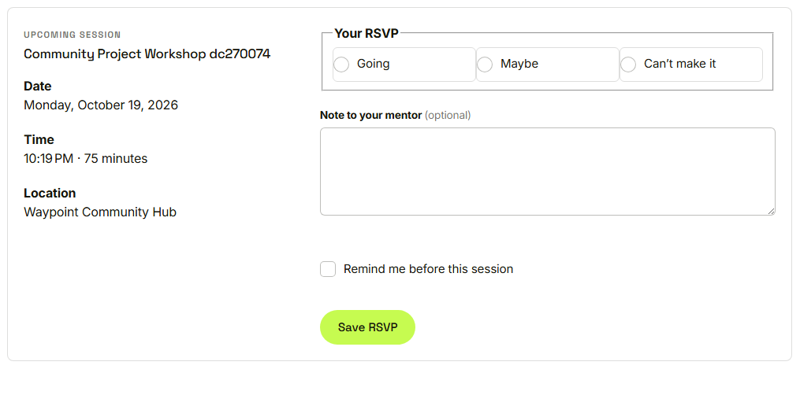
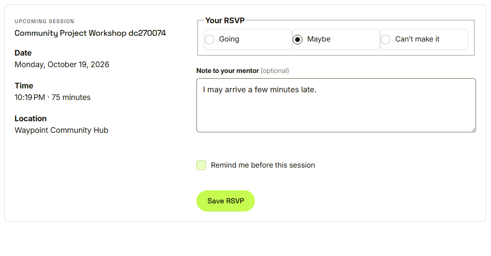
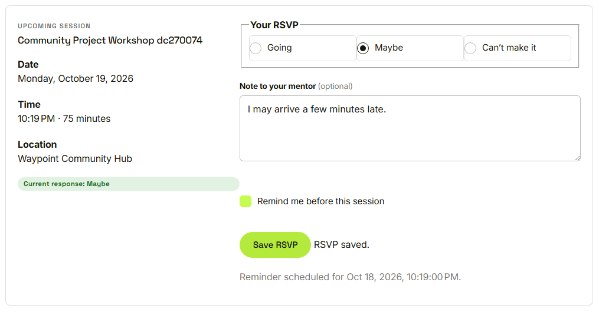
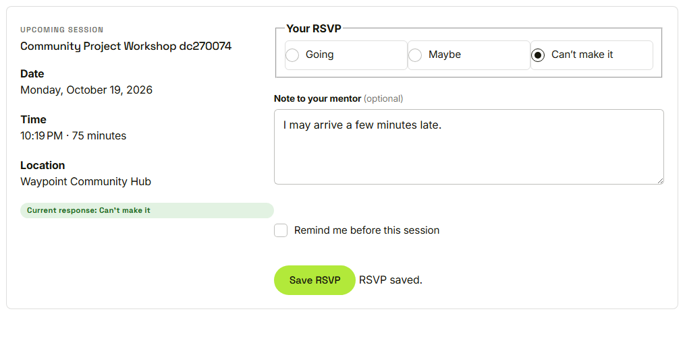

Waypoint · Video 073
Replying to a session
Going, maybe, or can't make it
My schedule

Going, maybe or can't make it
A note and a reminder

Maybe, a note to the mentor, and a reminder
RSVP saved

The answer and the reminder time are shown
Can't make it turns the reminder off

The reminder is cleared
Things to remember
Answer going, maybe or can't make it
Add a note for the mentor
Ask for a reminder
Change the answer later